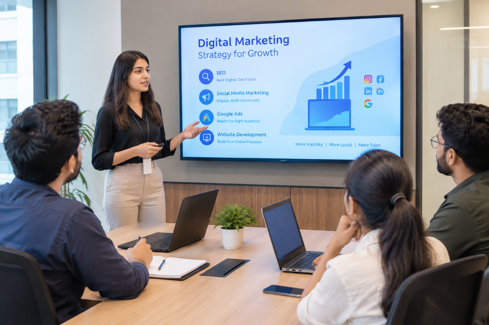

5+ Years of Digital Marketing Experience
We bring practical knowledge of digital marketing strategies, helping businesses make informed decisions about their online growth.
Digital marketing, made meaningful
Good marketing gets you noticed. The right strategy gets you somewhere. We help ambitious brands turn attention into lasting growth.

Why Matrics Mania
At Matrics Mania, we combine over 5 years of digital marketing experience with a practical, results-focused approach to help businesses strengthen their online presence. We understand that every business has different goals, challenges, and customers, which is why we focus on strategies tailored to your needs rather than one-size-fits-all solutions.
From search engine optimization (SEO) and social media marketing to Google Ads, website development, and lead generation, our focus is on understanding your business, reaching the right audience, and making informed marketing decisions. We value transparent communication, meaningful performance tracking, and continuous improvement to help your business grow sustainably.
The Matrics difference
Clear thinking. Thoughtful execution. Growth you can build on.
We bring practical knowledge of digital marketing strategies, helping businesses make informed decisions about their online growth.
We consider your industry, target audience, objectives, and budget before recommending suitable marketing activities.
We use available performance data, campaign insights, and website analytics to identify opportunities and improve marketing efforts.
We aim to keep you informed about the work being done, the progress being made, and the areas that need further improvement.
From SEO and social media to paid advertising and website development, we help businesses coordinate their digital marketing efforts.
We prioritize relevant traffic, qualified leads, customer engagement, and long-term online visibility instead of relying on vanity metrics alone.
A smarter kind of digital marketing agency
We combine creative thinking, digital marketing expertise, and data-informed strategies to help businesses build stronger online visibility, connect with the right audience, and turn opportunities into measurable growth.
Get to know usEvery business has different goals, customers, and challenges. We take the time to understand your brand, audience, and market before developing a digital marketing strategy aligned with your objectives.
From SEO and social media marketing to paid advertising and website development, we focus on creating meaningful digital experiences that attract attention, build trust, and encourage potential customers to take action.
Digital marketing is an ongoing process. We use available performance data, campaign insights, and analytics to understand what is working, identify opportunities, and make informed improvements over time.
A little perspective
We’re curious about what makes a business tick, where its next opportunity lives and how digital can help get it there.
Meet Matrics ManiaSelected work

Solar energy

Automobility
Your next chapter starts here
Local digital marketing
Explore our specialist digital marketing services for businesses in Varanasi.
Visit us
Frequently asked questions
Matrics Mania offers digital marketing services designed to help businesses strengthen their online presence and reach relevant audiences. Our services include Search Engine Optimization (SEO), website design, social media marketing, Google Ads, Meta Ads, and Google Business Profile optimization. We help businesses identify suitable digital channels based on their goals, target audience, and budget.
Digital marketing can help businesses improve online visibility, connect with potential customers, generate enquiries, and measure marketing performance. The results depend on factors such as competition, audience demand, website quality, budget, and campaign strategy. At Matrics Mania, we focus on aligning digital marketing activities with specific business objectives rather than relying solely on website traffic or social media followers.
Search Engine Optimization (SEO) is the process of improving a website's visibility in organic search results. It includes technical SEO, on-page optimization, content improvements, internal linking, and relevant off-page activities. A well-planned SEO strategy helps search engines understand your website and can attract people searching for your products or services. SEO takes time, and rankings cannot be guaranteed because search algorithms and competition continually change.
SEO does not produce the same results for every website. Some improvements, such as fixing crawlability issues or improving page titles, may help search engines understand a website more effectively, but ranking and traffic improvements can take several months. The timeline depends on your website's existing condition, competition, content quality, backlink profile, and implementation. Performance should be evaluated using indicators such as organic clicks, relevant impressions, keyword visibility, and qualified enquiries.
A professional website gives potential customers a place to understand your services, evaluate your business, and take action. Effective website design combines mobile responsiveness, clear navigation, useful content, fast loading, accessible layouts, and visible calls to action. At Matrics Mania, our website design approach focuses on creating a user-friendly experience that supports business objectives and provides a strong foundation for SEO and other digital marketing activities.
SEO focuses on improving visibility in unpaid search results, whereas paid advertising allows businesses to pay for ad placements on platforms such as Google and Meta. SEO can support long-term organic visibility, while paid campaigns can help businesses reach targeted audiences more quickly once campaigns are approved and launched. Both approaches have costs, limitations, and different timelines. The right combination depends on your objectives, competition, available budget, and expected customer acquisition costs.
Social media marketing helps businesses communicate with their audiences, share useful content, build brand awareness, and encourage enquiries. An effective strategy considers audience preferences, content formats, posting consistency, engagement, and business goals. Rather than focusing only on follower counts, businesses should also evaluate meaningful interactions, website visits, qualified leads, and conversions where tracking is available.
Yes, Matrics Mania offers Google Ads and Meta Ads management to help businesses reach relevant audiences through paid campaigns. The process can include campaign planning, audience research, ad creative development, budget allocation, conversion tracking, and performance optimization, depending on the agreed scope. Advertising results depend on factors such as targeting, competition, offer quality, landing pages, and budget. We do not promise guaranteed leads, sales, or advertising returns.
Digital marketing costs depend on the services required, website condition, campaign complexity, competition, and expected scope of work. SEO, website design, social media management, and paid advertising may have different pricing structures. Advertising spend may also be separate from management fees. Matrics Mania can assess your requirements and recommend a suitable scope and budget before work begins, helping you understand what is included in the proposed services.
Digital marketing performance should be measured against clearly defined business objectives. Depending on the service, useful metrics may include organic clicks, search impressions, keyword visibility, website engagement, enquiries, conversion rate, cost per lead, and return on ad spend. We recommend using relevant analytics and advertising tools to evaluate performance. Reports should explain what the data shows, which activities were completed, and where improvements may be needed.
A digital marketing strategy should begin with an understanding of the business, its products or services, target audience, competitors, existing online presence, and goals. The next steps may include selecting suitable marketing channels, identifying content and SEO opportunities, planning campaigns, defining performance indicators, and reviewing results. This approach helps prioritize activities based on business needs rather than applying the same marketing plan to every client.
You can get started by sharing information about your business, current website or social media profiles, marketing objectives, target audience, and approximate budget. Matrics Mania can then review your requirements and discuss suitable services, expected deliverables, timelines, and pricing. This initial discussion helps establish clear expectations before you decide which digital marketing activities are appropriate for your business.